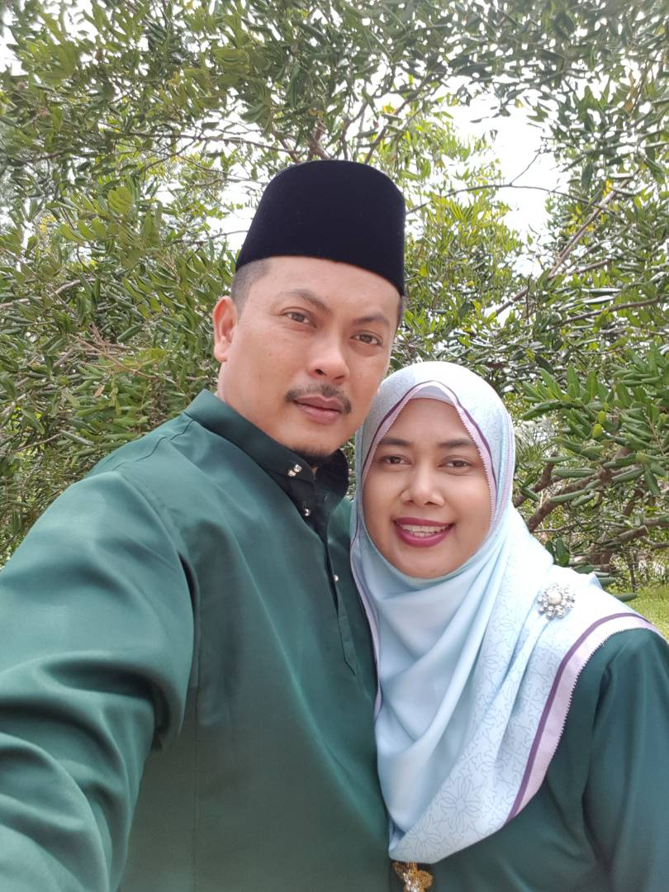
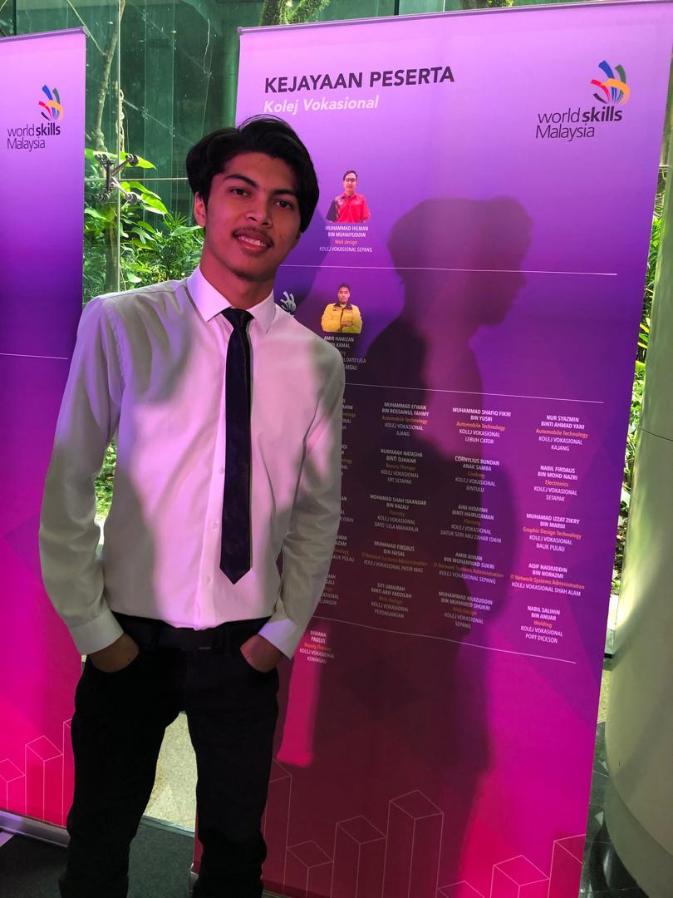
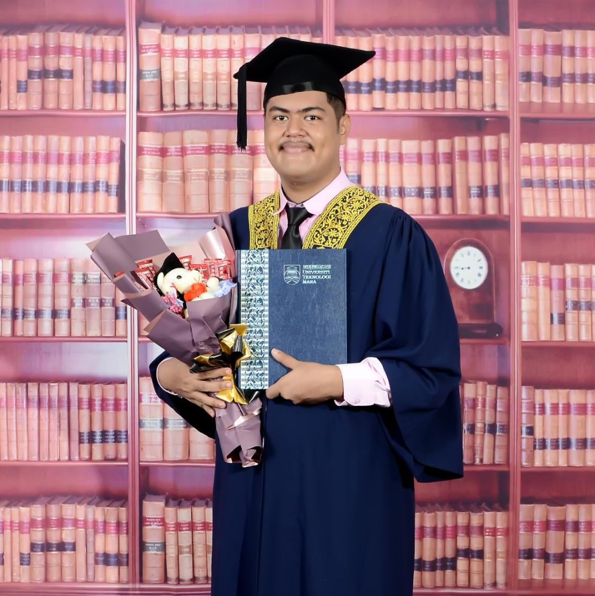

| 
|
- My mother's name is Rohani Binti Abdullah while my father's name is Mardi Bin Jamaludin.
- My mom was born in 1976 and my dad was born in 1975.
- They are NAVY pensioners.
|
| 
|
- This is my eldest brother named Muhamad Izzat Zikry Bin Mardi.
- My brother was born in 1999 in Perak and is now 25 years old.
- My brother took a diploma at Balik Pulau Vocational College majoring in Graphic Design.
- Now my brother works as a graphic designer in Perak.
|
| 
|
- This is my second brother named Muhamad Izzat Fikry Bin Mardi.
- My brother was born in 2000 in Perak and is now 24 years old.
- My brother took his diploma and degree at UiTM Permatang Pauh majoring in Engineering.
- Now my brother works as an engineer in Kuala Lumpur.
|